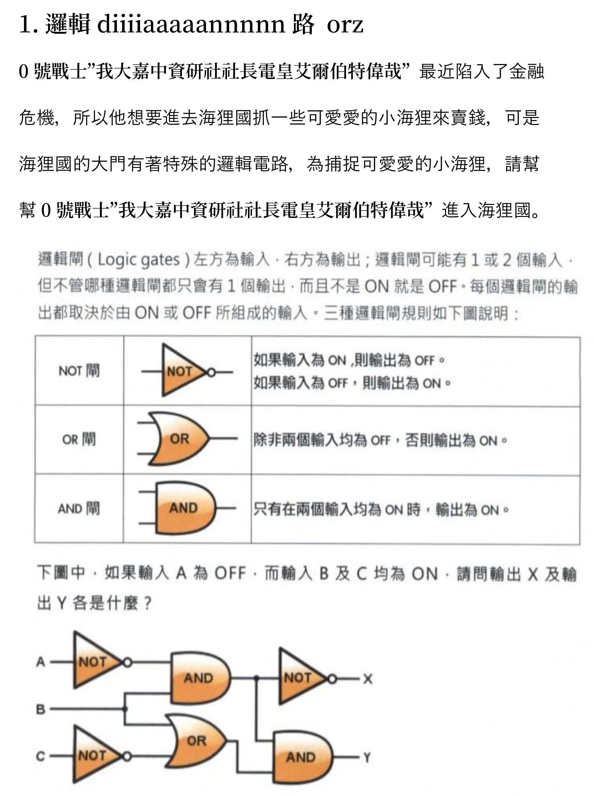
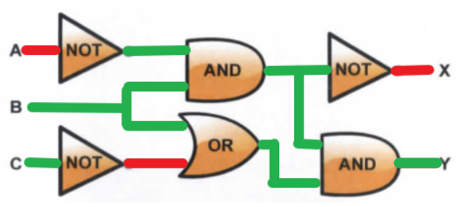
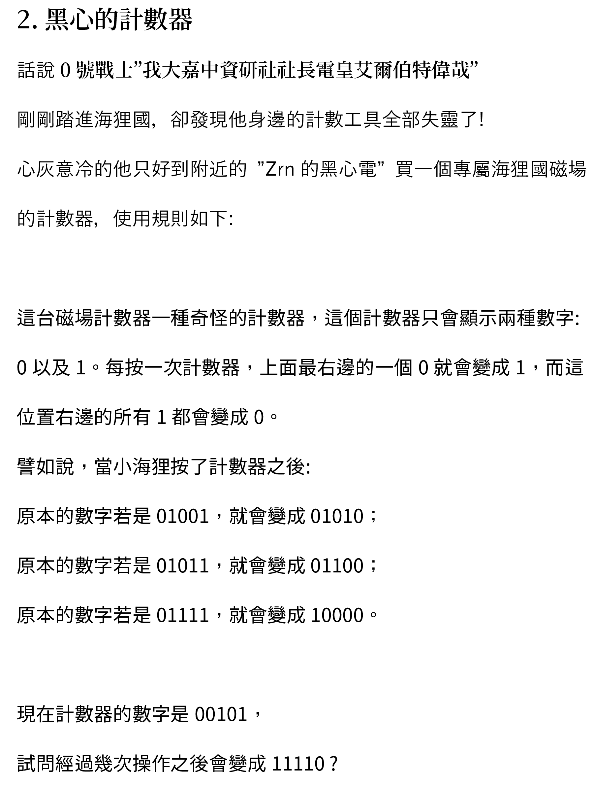
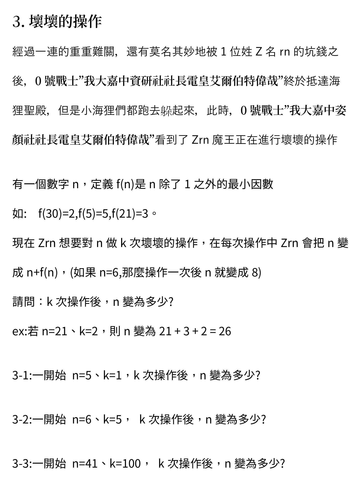
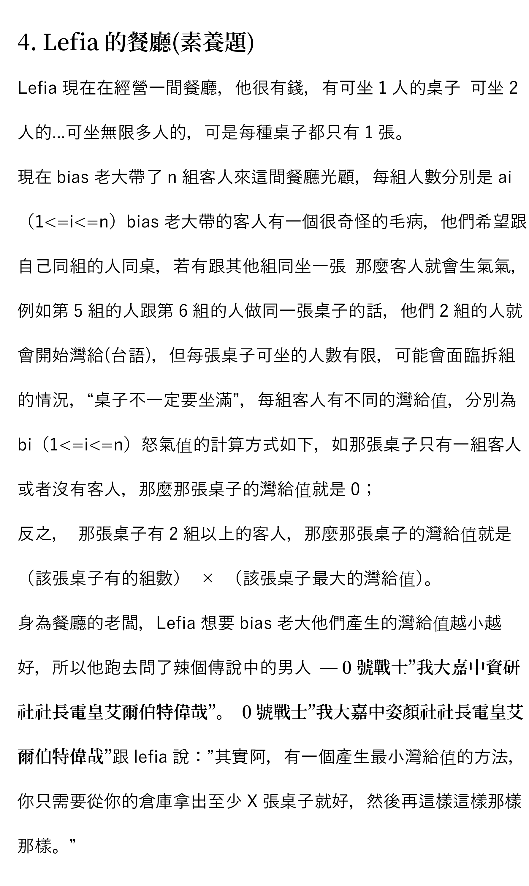
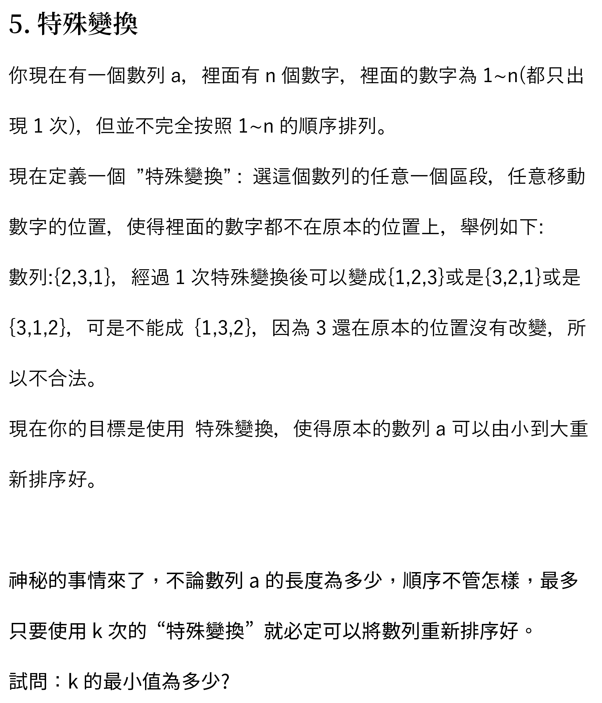
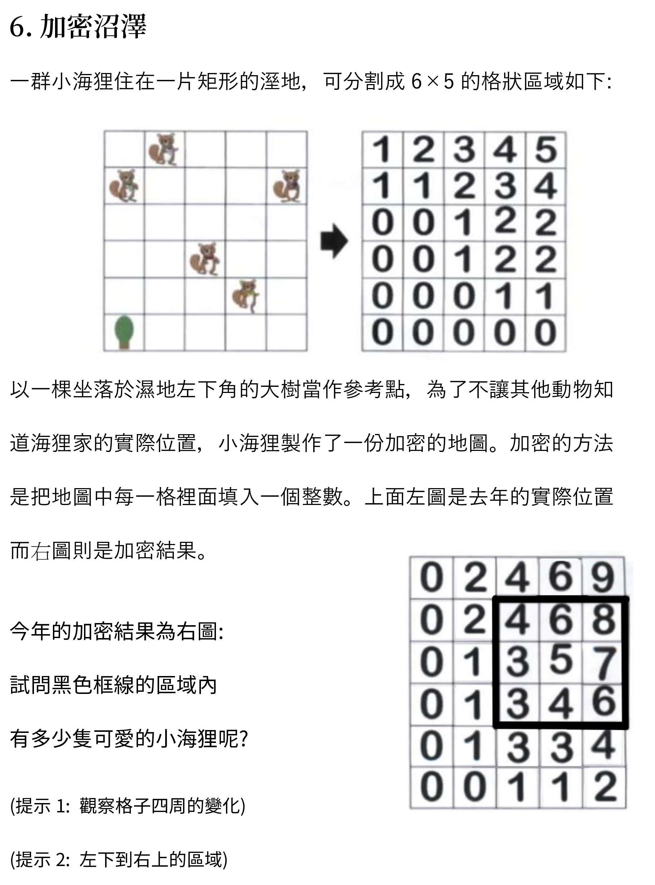
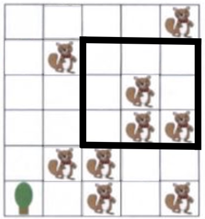

# 第一題
題目敘述

題目出處：國際運算思維能力測驗 (俗稱 Bebras 或小海狸) 2014 年題庫第九題邏輯電路
題解部分
他就是要考你條件的判斷，只要把圖畫下來就好了
不知道要帶紙筆的我們，很抱歉

# 第二題
題目敘述

題目出處：國際運算思維能力測驗 (俗稱 Bebras 或小海狸) 2014 年題庫第 14 題
題解部分
此題完全就是二進制的考題。
# 什麼是二進制？
日常我們在算數學時，時常是使用十進制的方式運算，十進制就是當我們累加到 10 的時候就會進位，後面的數都會歸 0。（思考一下，99+1=100 是怎麼運作的）
二進制，也有相同的效果，當我們數到 2 的時候，就會進位，後面數字也都會歸 0，跟題目敘述一模一樣。
# 知道是二進制又能幹嘛？
像我們在運算十進位時，
001 代表 10⁰
010 代表 10¹
100 代表 10²
在二進制的思維裡，只需要將底數 10 全改成 2，就可以輕鬆轉換為十進制:
001 代表 2⁰ = 1
010 代表 2¹ = 2
100 代表 2² = 4
在運算時，我們可以將一個數字分別對不同位數做拆解相加，像是：
0110 = 100 + 10 = 10² +10¹
1101 = 1000 + 100 + 1 = 10³ +10² + 10⁰
在二進的方法中，亦可拆分，
0110 = 100 + 10 = 2² +2¹ = 5
1101 = 1000 + 100 + 1 = 2³ +2² + 2⁰ = 13
# 回到題目
題目中的 00101，即可轉換為 2² + 2⁰ =5
題目中的 11110 ，即可轉換為 2⁴+2³+2²+2¹=30
兩者之間的差值即為所解，所以就等於 25
# 第三題
題目敘述

題目出處: Codeforces Round #641 (Div. 2) A. Orac and Factors
題解部分
# 第四題
題目敘述

題目出處：毛豆子的腦袋瓜 (原創)
題解部分
就只是個長篇文章，實際上一點也不難。
簡單的重新詮釋題目：
有 n 組不同的群組，每個人都有自己的易怒值，只要不同群組的人碰在一起，就會有怒氣值，每張桌子的怒氣值 =（該桌不同的群組數）×（該桌最大的易怒值），每張桌子可以坐無限多人。
現在問題是：至少準備多少張桌子即可將總怒氣值降到最低？
若要產生最小的怒氣值最小值，就是沒有產生怒氣值，所以，只要準備 n 張桌子，一組一桌就好啦！！
如果有先看選項應該就很好想了。
# 第五題
題目敘述

題目出處: Codeforces Round #655 (Div. 2) C. Omkar and Baseball
題解部分
就是一個思維 (討論) 題喔～～
因為題目是問 k 的最小值，所以我們只要從 0 開始討論狀況，直到找到符合題目的解即可。
- k = 0 ， 只能將已經排序好的數列排序好 (就是沒排)
- k = 1 ， 因為是錯排 (指定區域都要換)，所以只能排好只有一段順序完全不對的數列
例如: {2,3,4,1} 或 {1,3,2,4} 等等 - k = 2 ， 第一次的轉換就把數列全打亂，使數列只剩一段順序完全不對，第二次就必能排序好
所以，答案就是 2 啦簡單吧，是不是真的在 100 萬以下阿
# 第六題
題目敘述

題目出處：國際運算思維能力測驗 (俗稱 Bebras 或小海狸) 2014 年題庫第二十九題加總區表
題解部分
這題是個二維的前綴和，但也沒有那麼困難
經過細心觀察，再加上那超級佛系的提示二，不難發現加密過後的數字就是指從左下到右上角的海狸數量，所以，只要一格一格的從左下往右上推理，答案就能被畫出來囉當然也可以用排容原理解喔

答案就是三個喔